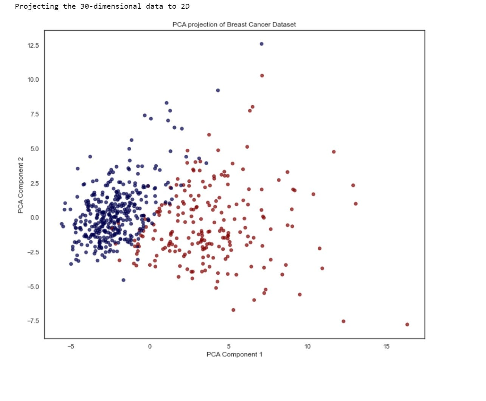
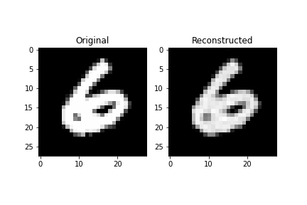
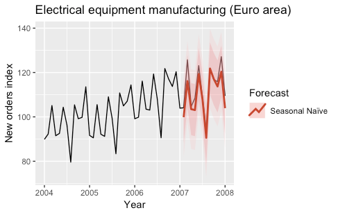
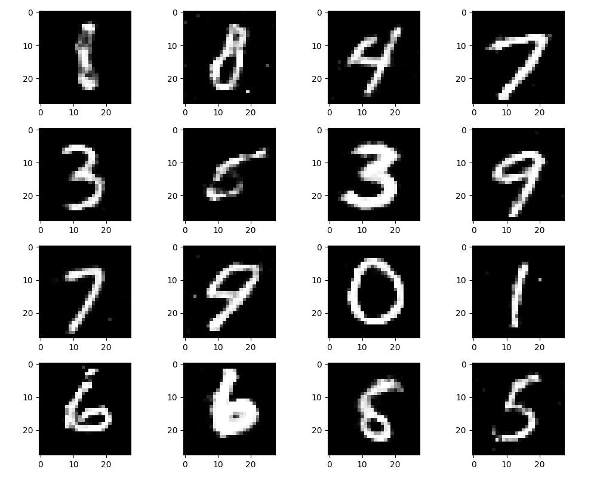

In this project on Telco Customer Churn, we aim to understand the factors influencing churn, such as service quality and pricing. We will analyze customer data to develop effective retention strategies for telcos and reduce revenue loss. The study's focus includes personalized experiences and innovative services to foster customer loyalty.
In feature engineering with the Ames dataset, we will create new meaningful features from existing ones, such as combining area measurements to derive total living space. We may handle missing data through imputation techniques and encode categorical variables to prepare the data for machine learning models effectively. Additionally, feature scaling and normalization may be applied to ensure all features contribute equally to the analysis.
In hierarchical clustering with the "mpg" dataset, we'll group vehicles based on similarity in fuel efficiency and related features. The algorithm will iteratively merge the closest data points into clusters, forming a hierarchical structure. The resulting dendrogram will illustrate the clustering hierarchy.
In this analysis, we will perform linear regression using the "Advertising" dataset. The goal is to predict sales based on advertising expenditures for TV, radio, and newspaper channels. We will build a linear regression model to explore the relationships between these variables and understand their impact on sales.
In this interactive analysis, we will explore the world of K-Nearest Neighbors (KNN) regression using the KC House dataset. By applying the KNN algorithm to this housing data, we aim to predict house prices based on various features, providing valuable insights for buyers and sellers in the real estate market. Get ready to interactively experience the power of KNN in making accurate and dynamic house price predictions.
Join us on an interactive journey as we dive into the world of Support Vector Classification (SVC) using the "mouse_viral_study" dataset. Together, we'll unravel intricate patterns and classify the data to gain deeper insights into the study's viral outcomes. Get ready to actively engage with SVC to unlock valuable discoveries and revolutionize our understanding of this critical research.
Embark on an empowering exploration as we harness the potential of text classification using the "airline_tweets" dataset. Through sentiment analysis, we aim to classify the tweets and gain valuable insights into customer emotions, opinions, and experiences with airlines. Get ready to interactively navigate through the world of textual data and uncover the true sentiment behind each tweet, empowering businesses to make data-driven decisions for improved customer satisfaction.

In this interactive exploration, we employ Principal Component Analysis (PCA) on the "cancer_tumor_data_features" dataset to achieve dimensionality reduction with precision. Through interactive manipulation of data, we aim to extract the most informative tumor features, aiding researchers in accurately characterizing tumor subtypes and advancing personalized cancer treatments. Join us on this transformative journey as we unravel the power of PCA in the fight against cancer.
Join us in an interactive journey of image transformation as we breathe new life into "palmtrees.jpg" using K-Means Color Quantization. Through dynamic color reduction, watch as the palm tree landscape undergoes a revitalizing change, preserving its essence while unleashing a captivating visual experience. Get ready to engage with the power of data-driven image processing, where creativity meets data science to create an artful masterpiece.
In this project, we will perform sentiment analysis for movie reviews using Amazon SageMaker. By leveraging machine learning algorithms, we aim to classify movie reviews as positive or negative, gaining valuable insights into audience opinions and sentiments. With SageMaker's powerful tools, we will create an efficient and accurate sentiment analysis model for enhanced decision-making in the entertainment industry.

Step into the realm of interactive data exploration as we employ transfer learning with the InceptionV3 model to revolutionize malaria detection using custom images. Experience the power of pre-trained features fused with cutting-edge deep learning techniques to create a robust and accurate malaria classification system. Join us on this transformative journey to empower healthcare professionals and researchers in early disease diagnosis and improve patient outcomes worldwide.

Join us on an interactive exploration as we delve into the world of autoencoders applied to the MNIST dataset. By leveraging this powerful unsupervised learning technique, we aim to unravel the hidden representations of MNIST images, compressing and reconstructing them with astonishing accuracy. Prepare to engage with cutting-edge deep learning as we unveil the transformative capabilities of autoencoders in image processing and data compression.

Step into the world of interactive data exploration as we harness the power of Recurrent Neural Networks (RNN) for time series forecasting using the RSCCASN dataset. Through dynamic analysis, we aim to empower businesses and researchers with accurate predictions of future trends and patterns. Join us on this transformative journey as we revolutionize time series forecasting using RNN, bringing precision and foresight to decision-making processes.
Prepare for an immersive adventure as we delve into the fascinating realm of Natural Language Processing (NLP) and embark on text generation using the esteemed "shakespeare.txt" dataset. Through interactive analysis, we endeavor to revive Shakespearean prose and poetry, tapping into the prowess of language models to craft captivating and evocative text. Join us in this enchanting journey to witness the artistry of NLP as we breathe new life into Shakespeare's words, creating an interactive experience that celebrates the essence of his literary brilliance.

In this captivating exploration, we dive into the world of Deep Convolutional Generative Adversarial Networks (DCGAN) applied to the MNIST dataset. Through this interactive journey, we aim to unleash creativity by generating realistic and captivating images of handwritten digits, taking generative AI to new heights. Prepare to witness the magic of DCGAN as we bridge the gap between human creativity and AI, producing stunning visual art with an innovative deep learning approach.